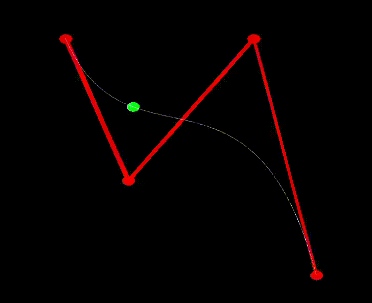

An Underwater Journey
Progress Summary
Summarize what you have accomplished so far.
Achieved Goals
Ugo Novello
Gabriel Jiménez
Michael Glanznig
Week 1
Research for the project proposal
Research for the project proposal.
Week 2
Add fog features, start working on terrain generation
Start working on wave simulation, then start doing research on Bezier Curves.
Week 3
Continue working on terrain generation, start L-systems
Implement WebGL functions for Bezier Curves up to degree 4.
Show some preliminary results.
 
Optionally present the validation of any feature you have already implemented. This is not mandatory, but it can help you get useful feedback for the final report.
Fog
Implementation
We applied a color during the rendering of every object, based on the distance between the viewer and the object. Distance at which the for is least intensive and most intensive, fog color and maximum and minimum fog intensity can be tweaked from the overlay. Fog can also be toggled on and off with a hotkey. If time permits it, color’s alpha value will be partially determined by a noise texture.
Validation
The image at the beginning shows a small demo of the fog. Noise artifacts are due to compression from video to gif and not part of the fog itself.
Report the number of hours each team member has dedicated to the project (as recorded on Moodle). Comment on the accuracy of your initial time estimates. Critically reflect on your work plan and assess if you are on track.
Worked Hours
Ugo Novello
Gabriel Jiménez
Michael Glanznig
Week 1
3
3
Week 2
4
4
Week 3
Schedule Update
Acknowledge any delays or unexpected issues, and motivate proposed changes to the schedule, if needed.
We didn’t really start the project until Week 2 because we spent Week 1 doing research and writing the proposal.
Furthermore, there was a change of plans in terms of the features, as ‘Wave Simulation’ was subtituted by ‘Bezier Curves’ and ‘Posterization’, so the work from Week 2 was also impacted. It also turned out some features like terrain generation are more challenging than expected, which lead to some delay but should no be a major issue.
Present the work plan for the remaining time.
Updated Schedule
Ugo Novello
Gabriel Jiménez
Michael Glanznig
Week 4
Finish L-Systems
Posterization. Start texture generation.
Week 5
Finish terrain generation and place l-systems generated elements on it
Finish texture generation. Put everyhing together
Week 6
put together video and practice
put together video and practice
put together video and practice